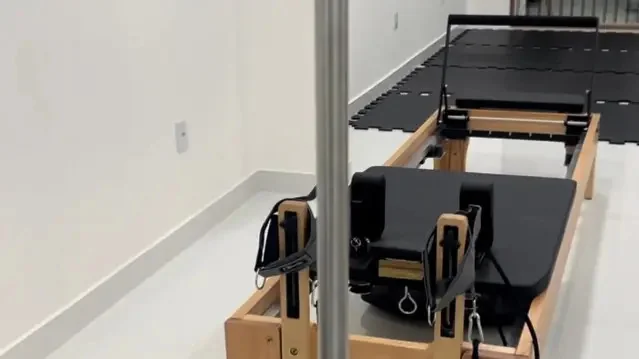
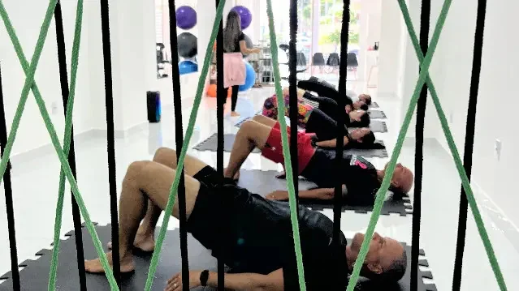
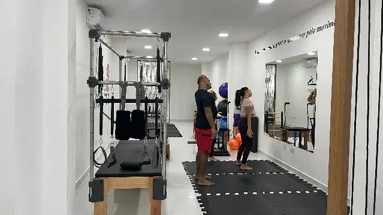
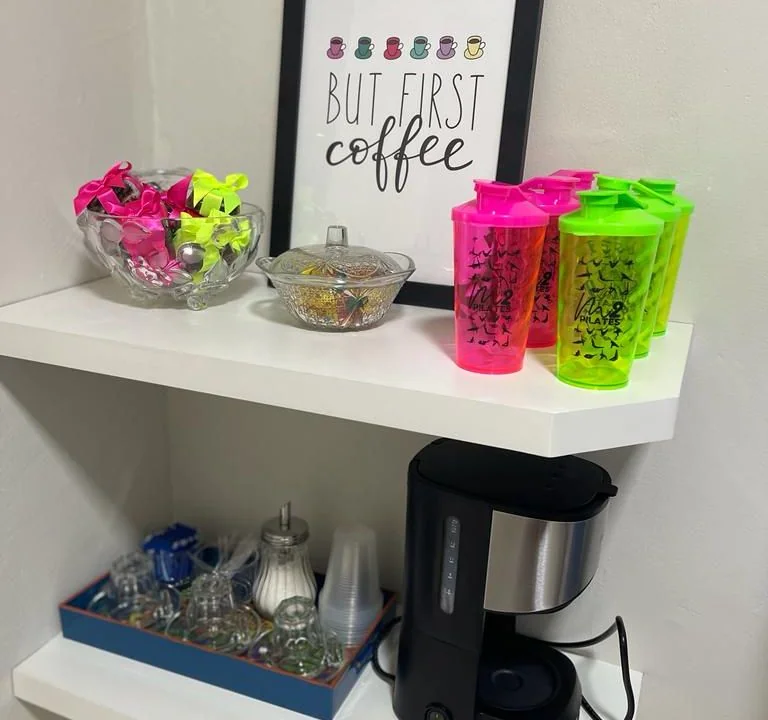
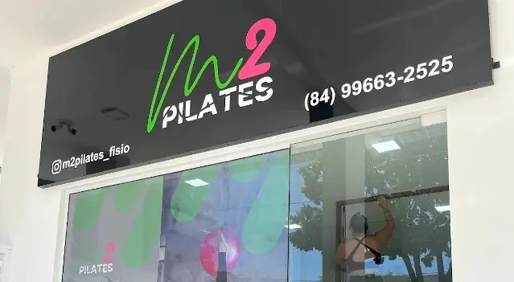

Pilates clássico
e no solo
Praticamos Pilates clássico e no solo na unidade Neópolis. Fale sobre o que procura e conheça as aulas.
Neópolis, Natal
Na unidade Neópolis, oferecemos Pilates no solo, nos aparelhos e em suspensão. Conheça as modalidades e agende sua visita.

Na unidade Neópolis, temos Pilates no solo, nos aparelhos e no aéreo. Descubra as possibilidades para a sua prática.
Praticamos Pilates clássico e no solo na unidade Neópolis. Fale sobre o que procura e conheça as aulas.
Nossa sala reúne Reformer e aparelhos em madeira para a prática. Conheça o espaço e as aulas da M2.
Temos Aeropilates e Pilates aéreo. Pergunte sobre as informações para participar.

Nossa sala reúne aparelhos em madeira, acessórios e áreas para a prática. Também oferecemos Pilates funcional e clínico.
Para conhecer o atendimento, fale sobre o que procura e tire suas dúvidas com a unidade Neópolis.
Conversar sobre as modalidadesNossa sala recebe as práticas de Pilates e suas diferentes modalidades. Temos também Pilates pré-natal: conheça as orientações e os detalhes do atendimento com a equipe.


Temos ar-condicionado, chuveiro, estacionamento, Wi-Fi e espaço adaptado para cadeira de rodas.
Confirme as informações de acesso e o endereço completo no seu agendamento.

As atividades precisam de agendamento. Fale com a unidade Neópolis sobre a prática que você procura e consulte a disponibilidade.
Conversar sobre a visitaDiga qual modalidade chamou sua atenção e tire suas dúvidas.
Converse sobre aulas, valores e horários disponíveis.
Combine os detalhes com a unidade Neópolis antes de vir.
Sim. É necessário agendamento para participar das atividades. Fale com a unidade Neópolis para conhecer a disponibilidade.
Temos modalidades de Pilates no solo, Reformer, clássico, funcional, clínico e aéreo. Converse sobre cada prática e sua disponibilidade.
Temos Pilates pré-natal. Fale com a equipe sobre as orientações e informações para o atendimento.
Nossa unidade fica em Neópolis, Natal. Confirme o endereço completo antes da visita.

Confirme os detalhes da visita com a gente antes de vir ao espaço.
Acompanhe no Instagram